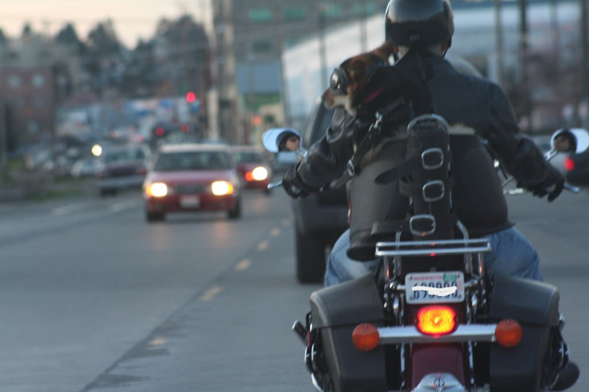

If I give you a photo, can you tell me if there is anything unusual about the content?
Yes, I can help with that. Please upload the photo and I'll analyze it for any unusual or noteworthy content.

The photo shows a scene that might be considered unusual: a dog is perched on the back of a motorcycle, wearing goggles, and looking over the shoulder of the motorcyclist, who is wearing a helmet and a jacket, suggesting they are in motion. This is not a common sight because dogs are not typically motorcycle riders and it's rare to see them equipped with protective gear like goggles, which are likely to protect the dog's eyes from wind and debris.
Such an image could be seen as endearing or amusing to some due to the human-like behavior of the dog wearing goggles. It also suggests that the rider has taken precautions for the dog's safety during the motorcycle ride, which is a responsible gesture though not standard. On a safety note, while the goggles provide eye protection, the overall safety of transporting a dog in this manner on a public road could be a concern for some viewers.